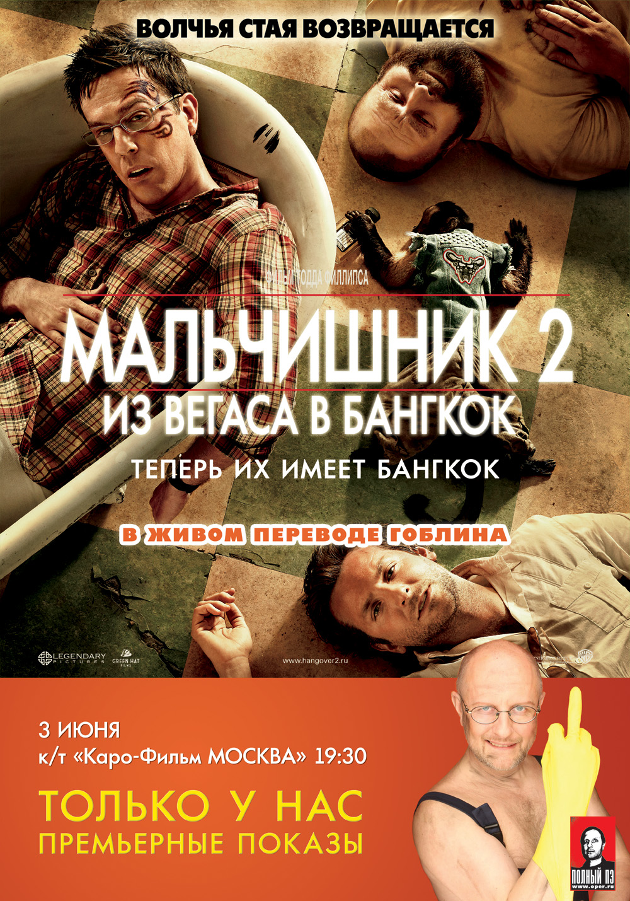
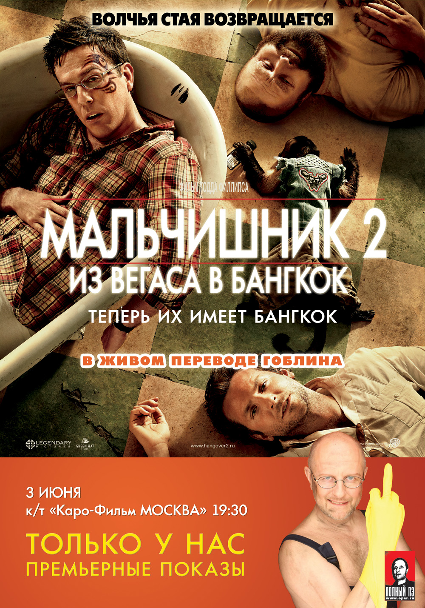

Yermakhan Khamitov Malikuly
Career: actor, voice actor
Birthday: 1 September 2007
Born place: Semey, Kazakhstan
Height: 182cm
Master: Yerassyl Gaziz

Career: actor, voice actor
Birthday: 1 September 2007
Born place: Semey, Kazakhstan
Height: 182cm
Master: Yerassyl Gaziz
Yermakhan Malikuly Khamitov was born on September 1, 2007, in the city of Semey, Republic of Kazakhstan. As the second child and the first son in his family, he showed an early interest in the arts, particularly cinema, which led him to pursue a career in acting.
His breakout role came with the superhero film "SuperErma." This project wasn't just his debut; it was the performance that defined his career. Khamitov didn't just play a superhero—he embodied the role, creating a charismatic and relatable character that resonated with audiences. The film quickly became a cult classic, and Yermakhan's honest and compelling performance earned him global recognition.
Following the success of "SuperErma," he was cast in a wide range of projects. He showed his versatility in the teen comedy "Project X" and surprised fans with a memorable role in the epic superhero film "Justice League." While he proved his dramatic skills in a more serious project like "Hacksaw Ridge," his portrayal of SuperErma remains his signature role and the performance he is most known for.
Today, Yermakhan Malikuly Khamitov continues to build his career, constantly seeking new challenges and proving he is not a one-role actor. However, his name will forever be linked to the character of SuperErma, who brought him global fame and the love of audiences.


 



Academy Award for Best Actor
2023 for "Hacksaw Ridge"
Golden Globe for Best Comedy Actor
2022 for "Hangover"
BAFTA Award for Rising Star
2021 for "Project X"